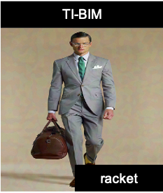

ColorFool: Semantic Adversarial Colorization
Adversarial attacks that generate small Lp-norm perturbations to mislead classifiers have limited success in black-box settings and with unseen classifiers. These attacks are also fragile with defenses that use denoising filters and to adversarial training procedures. Instead, adversarial attacks that generate unrestricted perturbations are more robust to defenses, are generally more successful in black-box settings and are more transferable to unseen classifiers. However, unrestricted perturbations may be noticeable to humans. In this paper, we propose a content-based black-box adversarial attack that generates unrestricted perturbations by exploiting image semantics to selectively modify colors within chosen ranges that are perceived as natural by humans. We show that the proposed approach, ColorFool, outperforms in terms of success rate, robustness to defense frameworks and transferability five state-of-the-art adversarial attacks on two different tasks, scene and object classification, when attacking three state-of-the-art deep neural networks using three standard datasets.
 |
|||||
|  | |||||
Explanatory video
Results
ColorFool achieves state-of-the-art results in three datasets (Private-Places365, CIFAR-10 and ImageNet) when attacking three state-of-the-art classifiers (ResNet50, ResNet18 and AlexNet) regarding success rate in misleading seen and unseen classifiers, robustness to defenses that employ image filtering, adversarial training or improve the loss function as well as being less detectable than restricted attacks, especially to JPEG compression. Furthermore, ColorFool generates adversarial images with the same size as the clean images.
Related material
Paper (CVPR)
If you use the code, please cite the publication:
ColorFool: Semantic Adversarial Colorization
A. S. Shamsabadi, R. Sanchez-Matilla, and A. Cavallaro
IEEE/CVF Conference on Computer Vision and Pattern Recognition (CVPR), Seattle, Washington, 16-18 June, 2020
Sponsors


Partners